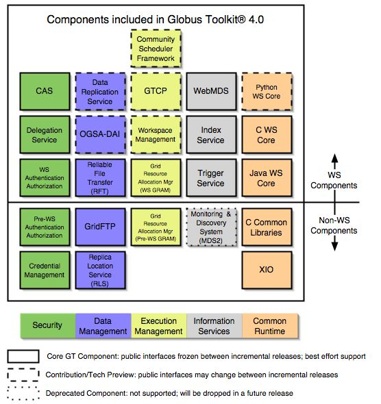

The open source Globus Toolkit ® is a fundamental enabling technology
for the "Grid," letting people share computing power, databases,
and other tools securely online across corporate, institutional,
and geographic boundaries without sacrificing local autonomy. The
toolkit includes software services and libraries for resource monitoring,
discovery, and management, plus security and file management. In
addition to being a central part of science and engineering projects
that total nearly a half-billion dollars internationally, the Globus
Toolkit is a substrate on which leading IT companies are building
significant commercial Grid products.
The toolkit includes software for security, information infrastructure,
resource management, data management, communication, fault detection,
and portability. It is packaged as a set of components that
can be used either independently or together to develop applications.
Every organization has unique modes of operation, and collaboration
between multiple organizations is hindered by incompatibility of
resources such as data archives, computers, and networks. The Globus
Toolkit was conceived to remove obstacles that prevent seamless collaboration.
Its core services, interfaces and protocols allow users to access
remote resources as if they were located within their own machine
room while simultaneously preserving local control over who can use
resources and when.
The Globus Toolkit has grown through an open-source strategy similar
to the Linux operating system's, and distinct from proprietary attempts
at resource-sharing software. This encourages broader, more rapid
adoption and leads to greater technical innovation, as the open-source
community provides continual enhancements to the product.
Essential background is contained in the papers "Anatomy
of the Grid" by Foster, Kesselman and Tuecke and "Physiology
of the Grid" by Foster, Kesselman, Nick and Tuecke.
Acclaim for the Globus Toolkit
From version 1.0 in 1998 to the 2.0 release in 2002 and now the
latest 4.0 version based on new open-standard Grid services, the
Globus Toolkit has evolved rapidly into what The New York Times called "the
de facto  standard" for
Grid computing. In 2002 the project earned a prestigious R&D
100 award, given by R&D Magazine in a ceremony where the Globus
Toolkit was named "Most Promising New Technology" among the year's
top 100 innovations. Other honors include project leaders Ian Foster
of Argonne National Laboratory and the University of Chicago, Carl
Kesselman of the University of Southern California's Information
Sciences Institute (ISI), and Steve Tuecke of Argonne being named
among 2003's top ten innovators by InfoWorld magazine, and a similar
honor from MIT Technology Review, which named Globus Toolkit-based
Grid computing one of "Ten Technologies That Will Change the World." The
Globus Toolkit also won the 2003 Federal Laboratory Consortium award
for excellence in technology transfer, in recognition of its widespread
adoption by industry.
standard" for
Grid computing. In 2002 the project earned a prestigious R&D
100 award, given by R&D Magazine in a ceremony where the Globus
Toolkit was named "Most Promising New Technology" among the year's
top 100 innovations. Other honors include project leaders Ian Foster
of Argonne National Laboratory and the University of Chicago, Carl
Kesselman of the University of Southern California's Information
Sciences Institute (ISI), and Steve Tuecke of Argonne being named
among 2003's top ten innovators by InfoWorld magazine, and a similar
honor from MIT Technology Review, which named Globus Toolkit-based
Grid computing one of "Ten Technologies That Will Change the World." The
Globus Toolkit also won the 2003 Federal Laboratory Consortium award
for excellence in technology transfer, in recognition of its widespread
adoption by industry.
Genesis of the Globus Project
In late 1994 Rick Stevens, director of the mathematics and computer
science division at Argonne National Laboratory, and Tom DeFanti,
director of the Electronic Visualization Laboratory at the University
of Illinois at Chicago, proposed establishing temporary links among
11 high-speed research networks to create a national grid (the "I-WAY")
for two weeks before and during the Supercomputing '95 conference.
A small team led by Ian Foster at Argonne created new protocols that
allowed I-WAY users to run applications on computers across the country.
This successful experiment led to funding from the Defense Advanced
Research Projects Agency (DARPA, and 1997 saw the first version of
the Globus Toolkit, which was soon deployed across 80 sites worldwide.
The U.S. Department of Energy (DOE) pioneered the application of
grids to science research, the National Science Foundation (NSF)
funded creation of the National Technology Grid to connect university
scientists with high-end computers, and NASA started similar work
on its Information Power Grid.
Widespread Adoption of the Globus Toolkit
Grids first emerged in the use of supercomputers, as scientists
and engineers across the U.S. sought access to scarce high-performance
computing resources that were concentrated at a few sites. Begun
in 1996, the Globus Project was initially based at Argonne,
ISI, and the University of Chicago (U of C). What is now called the
Globus Alliance has expanded to include the University of Edinburgh,
the Royal Institute of Technology in Sweden, the National Center
for Supercomputing Applications, and Univa Corporation. Project participants
conduct fundamental research and development related to the Grid.
Sponsors include federal agencies such as DOE, NSF, DARPA, and NASA,
along with commercial partners such as IBM and Microsoft.
The project has spurred a revolution in the way science is conducted.
High-energy physicists designing the Large Hadron Collider at CERN
are developing Globus-based technologies through the European Data
Grid, and the U.S. efforts like the Grid Physics Network (GriPhyN)
and Particle Physics Data Grid. Other large-scale e-science projects
relying on the Globus Toolkit include the Network for Earthquake
Engineering and Simulation (NEES), FusionGrid, the Earth System
Grid (ESG),the NSF Middleware Initiative and
its GRIDS Center, and the National Virtual Observatory. In addition,
many universities have deployed campus Grids, and deployments in
industry are growing rapidly.
Much as the World Wide Web brought Internet computing onto the average
user's desktop, the Globus Toolkit is helping to bridge the gap for
commercial applications of Grid computing. Since 2000, companies
like Avaki, DataSynapse, Entropia, Fujitsu, Hewlett-Packard, IBM,
NEC, Oracle, Platform, Sun and United Devices have pursued Grid strategies
based on the Globus Toolkit. This widespread industry adoption has
brought a new set of objectives, with the cardinal purpose being
to preserve the open-source, non-profit community in which the Globus
Project has thrived, while seeding commercial grids based on open
standards.
2004 saw the formation of Univa
Corporation, a company devoted to
providing commercial support for Globus software, and 2005 the creation
of the Globus Consortium by a group of companies with an interest
in supporting Globus Toolkit enhancements for enterprise use.
For more information, see this PowerPoint timeline.